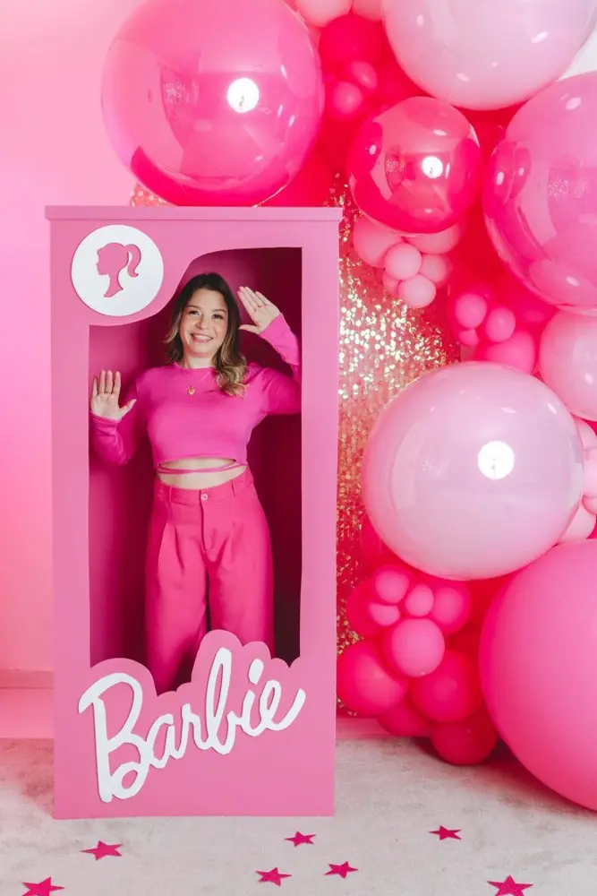
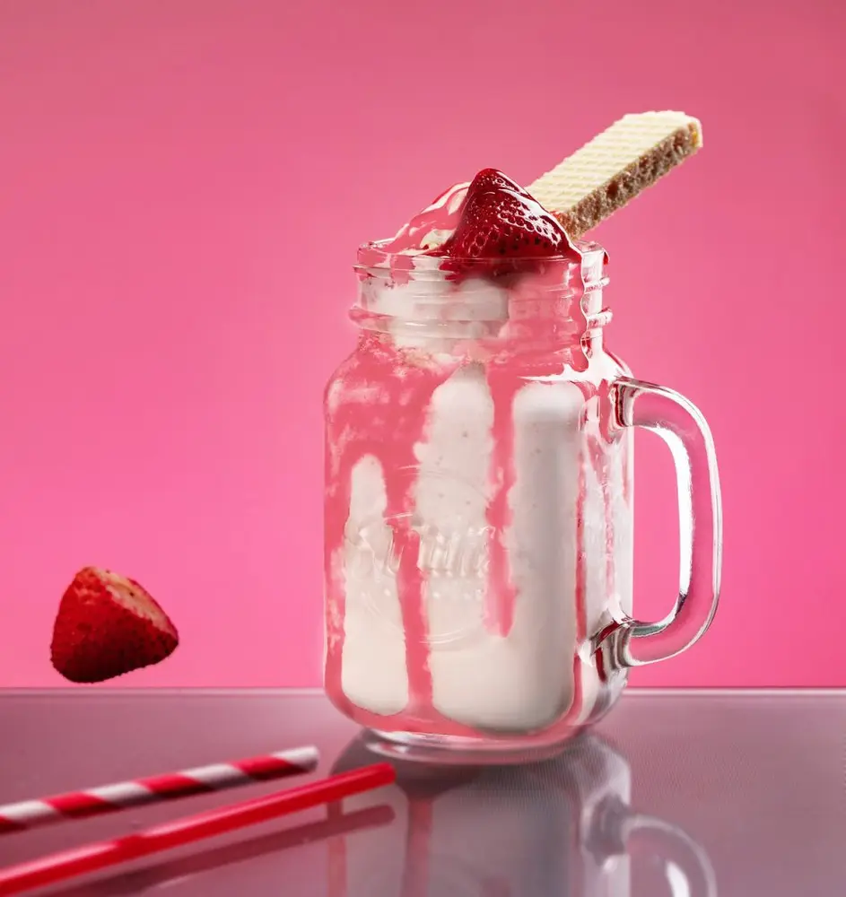

Articles / Recipes
Let’s go party with Barbie Syrup!
2023-09-19 · New products, Recipes

Have you heard of the Barbie movie? This film has taken over the world by storm thanks to its intriguing plot and dazzling aesthetics! Everyone’s going crazy for pink – from sharing “Barbiecore” photos on Instagram to plastering memes about the film all over Twitter.
What about bubble tea? Pink-shaded bubble tea has been a staple on social media, and this is the perfect time to ride on the pink wave!
Want to jump on the bandwagon? We make it easy for you!
Introducing our Barbie Syrup!

What is Barbiecore?
What does the term “Barbie” remind you of?
You’d probably think of little dolls with strawberry-blond hair, plasticy dollhouses, ponies, pastels…and pink, pink everywhere.
A deep, vibrant pink, but brighter than magenta – the Barbie pink is just as iconic as the doll herself.
Ever since the movie exploded in popularity, “Barbiecore” became the latest aesthetic trend online! Many Gen-Z teenagers have a fascination with Y2K-esque fashion, and the movie perfectly encapsulates that era. From bright colours and beach parties to plastic cars and bubblegum pink, the style is so delightfully retro – no wonder it’s so popular!
Interestingly enough, pink becoming a trend is nothing new: “Millenial Pink”, coined back in around 2020, referred to a range of neutral, pink/beige tones then-popular on Instagram. While the current trend embraces a far bolder shade, it’s clear that pink is certainly here to stay!
Our Barbie syrup
It’s easy to see why this syrup got its name – the vibrant pink is pretty hard to miss!
Want to add a dash of pink to your bubble tea menu? Mix this syrup with milk or milkshakes, or give a generous drizzle onto some whipped cream. The flowery, fruity flavours from the syrup is a great match for the creamy milk!
What’s more, this syrup features a thicker texture similar to Tiger Dot syrup: perfect for walling cups. Want a different take of the classic Tiger Sugar bubble tea? Give this a try!


Barbiecore milkshake
With its sweet flavours and bubblegum-pink flair, this is the perfect drink for the show.
Let’s go party!
What you’ll need
How to make
Add ice cubes to a glass or transparent cup
Pour in syrup from the edge of the cup to coat the inner walls – you can use a spoon to help spread it around
Add fresh milk and toppings of your choice. Enjoy!
Want to spice it up even further? While strawberries and cherries are the obvious choices to fit the aesthetics, bananas and peaches are also great choices.
Feel like adding a bit of crunch to your drink? Drop in a scoop of crispy crystal boba!
Time to get dazzling!
Embrace your inner kid – whip up some Barbiecore drinks and have fun!
Grab the syrup to get started!